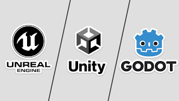
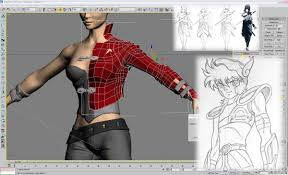
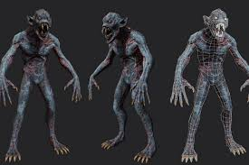
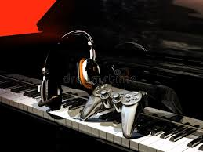
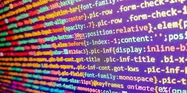

La realidad es que el desarrollo de un videojuego parte de una idea inicial simple. Los desarrolladores están buscando siempre nuevas ideas, ya sea para contar una historia no explorada hasta ahora, crear formas de diversión innovadoras o dar una nueva vuelta a conceptos que ya saben que funcionan. En esta etapa es habitual realizar una lluvia de ideas para explotar la creatividad y encontrar
Aqui la idea se convierte en un plan de acción. Se redacta el GDD (Game Design Document), un documento tecnico que detalla cada mecanica, regla y aspecto artistico. Se crean prototipos rapidos (versiones muy bisicas del juego) para probar si la jugabilidad es realmente divertida antes de invertir grandes recursos.
Al acabar la fase de diseño del desarrollo de un videojuego se tiene una imagen clara de cómo debería ser el juego y todo lo que se necesitará para alcanzar dicho resultado. Por lo tanto, se organiza la logistica. Se definen los hitos del proyecto, los presupuestos y el cronograma de trabajo. Se asignan tareas a los distintos perfiles (programadores, modeladores, musicos) y se establecen las herramientas tecnologicas o motores gráficos (como Unity, Unreal Engine o Godot) que se utilizaran.

Es la fase de construcción real y la que consume mas tiempo. Los programadores escriben el codigo, los artistas crean los entornos y personajes en 2D o 3D, y los ingenieros de sonido graban los efectos y la música. Es un proceso iterativo: a menudo hay que volver atrás para ajustar el diseño según lo que funciona o no en la práctica.




Una vez que el juego es jugable de principio a fin, se somete a un examen de prueba.
Es el fin del proyecto. Meses antes se ejecutan campañas de marketing, tráilers y demos para generar interés. Tras el lanzamiento en tiendas físicas o digitales, el trabajo no termina: el equipo suele realizar un seguimiento para corregir errores de última hora y analizar la recepción de la comunidad.